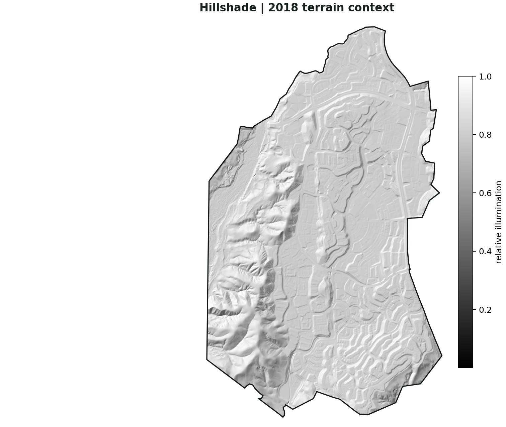
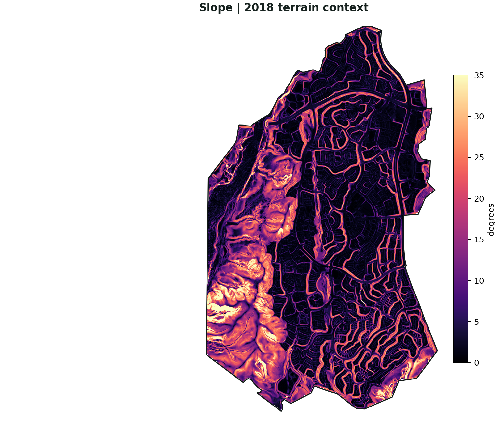
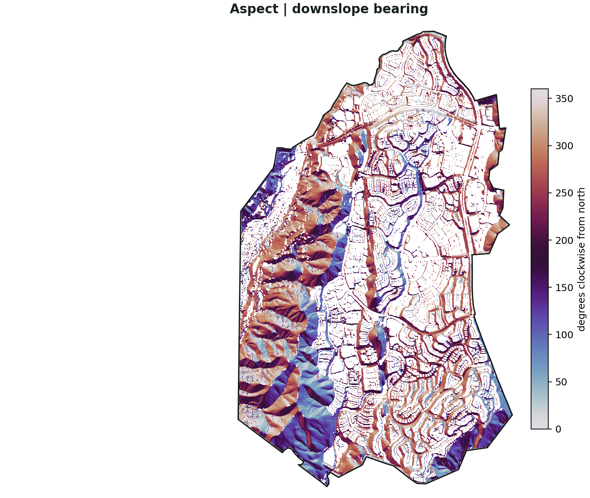
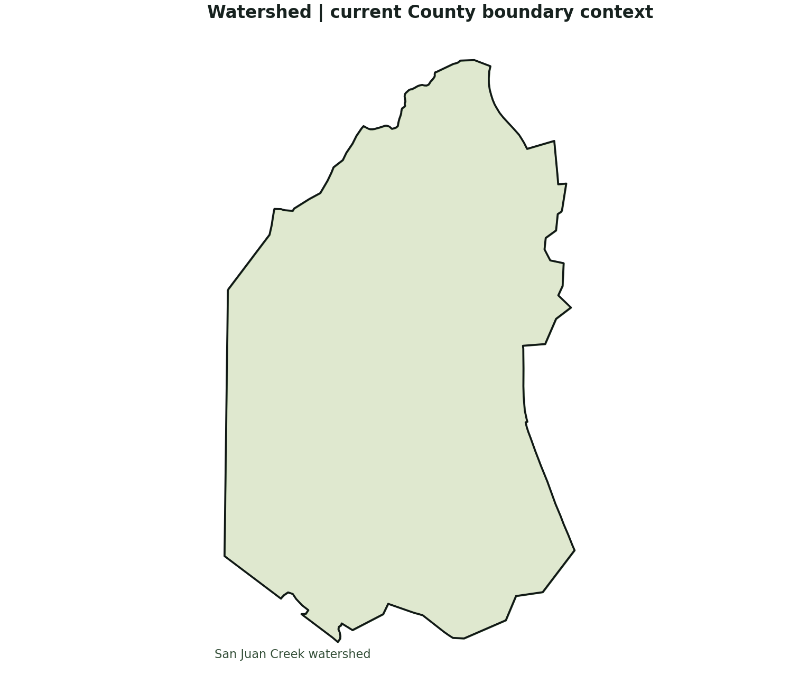
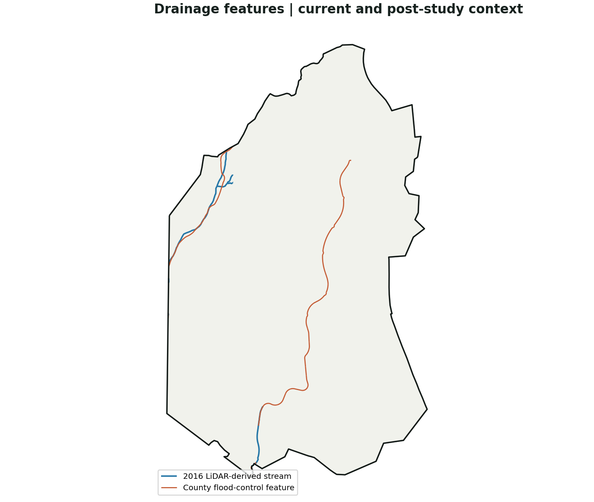

Terrain summary
64.6-237.8 msampled elevation range
4.24 degmedian sampled slope
23.49 deg90th percentile slope
6clipped mapped stream reaches
Temporal boundary: The DEM is from 2018, stream centerlines are based on 2016 LiDAR and 2015 imagery, and the watershed layer is current context. These are not reconstructed 1997-2010 surfaces.






Observed wind context
John Wayne Airport supplies 14 annual summaries for 1997-2010. El Toro supplies 1 year with usable wind observations. Reports are deduplicated to one routine record per UTC hour; invalid NOAA wind values and flagged quality codes are excluded.

| Context | Use | Limit |
|---|---|---|
| El Toro MCAS | Closer partial historical comparison | Only 1997 has usable archived study-period wind observations. |
| John Wayne Airport | Continuous 1997-2010 regional record | Approximately 25 km away; terrain and elevation differ. |
| Ladera Ranch | No on-site study-period station located | No local interpolation or directional assignment is made. |